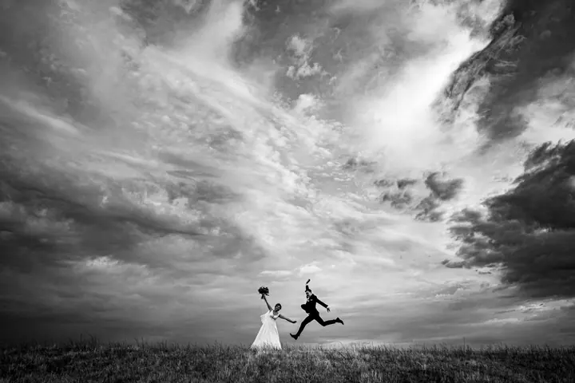
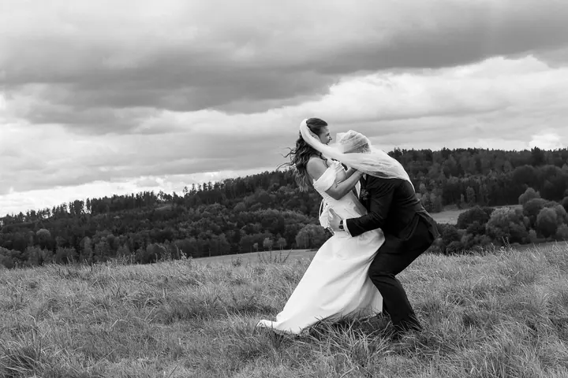

Svatby
Svatbu fotím od příprav až po večerní zábavu. Nezajímají mě jen naaranžované pózy. Hledám to, co se během dne opravdu děje: dojetí, smích, hosty i drobné detaily.

Svatební a dokumentární fotograf
Jmenuji se Lukáš Tycar a fotím svatby, rodiny, portréty a akty v Plzni a na Rokycansku. Nejradši stojím trochu stranou a dívám se, co se děje samo od sebe: objetí s kamarády, děti u dortu, chvíle, kdy si nikdo nevšímá foťáku.
Zeptat se na termín
Svatbu fotím od příprav až po večerní zábavu. Nezajímají mě jen naaranžované pózy. Hledám to, co se během dne opravdu děje: dojetí, smích, hosty i drobné detaily.
Jsem fotograf z Plzně a Rokycan. Nejvíc fotím svatby, ale vracím se i k rodinám, portrétům a aktu. Na svém webu je skládám do Photo Stories. Každá svatba nebo projekt má svůj vlastní příběh, ne jen pár vybraných záběrů.
Hodně mých fotek je černobílých. Baví mě kontrast, dramatická obloha nad loukou a obyčejné momenty, které by se snadno přehlédly. Patří k nim děda, co během svatby kouká na fotbal, nebo cedule se šipkou, kterou někdo na poslední chvíli maluje ke vchodu.
Nechci vás celý den aranžovat. Většinu času jen sleduji a fotím, a když přijde na společné fotky ve dvou, vyrazíme spolu ven do krajiny.
Ozvěte se přes formulář, na e-mail nebo na telefon 774 672 804. Pošlete mi datum a místo a já vám co nejdříve odpovím.
Probereme, jak má váš den vypadat, co je pro vás důležité a kolik času na focení budeme mít.
Jsem u toho a fotím to, co se opravdu děje. Na společné fotky si najdeme chvíli, kdy vám to bude vyhovovat.
Fotky vyberu, upravím a pošlu vám je jako ucelený příběh vašeho dne.
Nejčastěji v Plzni, v Rokycanech a v okolí. Pokud máte místo jinde, napište mi a domluvíme se.
Aktuální ceny najdete na mém webu v sekci Ceník. Když si nebudete jistí, co vybrat, rád vám poradím.
Ne. V portfoliu je hodně černobílých snímků, protože je mám rád, ale fotím i barevně. Zpracování přizpůsobím příběhu i vám.
Vůbec ne. Většinu dne vás nechám být a fotím, co se děje. U společných fotek vás jemně navedu.